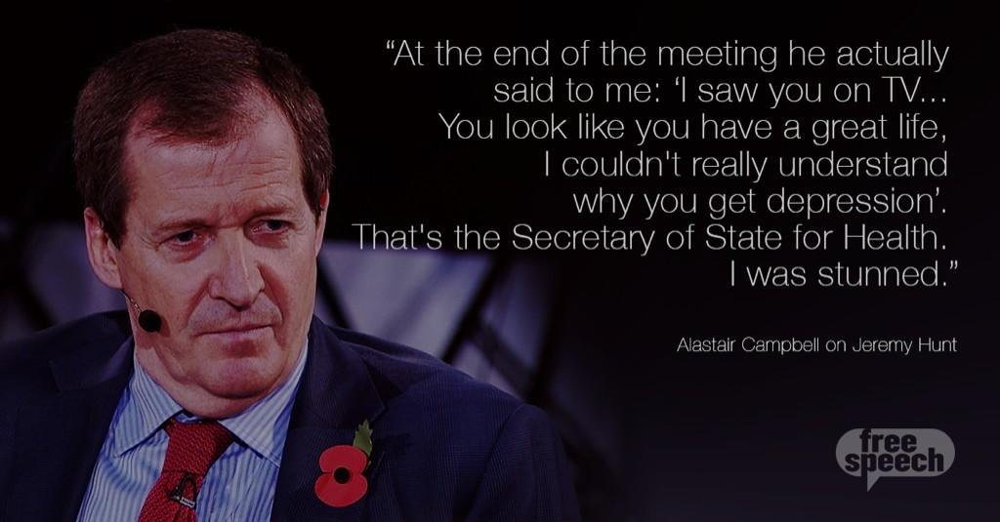

The
is in a period of Crisis.
The NHS is under a period of significant, sustained stress. This visual essay aims to address some of the
mis-truths surrounding NHS spending and performance. Particularly, we'll explore hospital occupancy,
waiting times, and some of the reasons behind why it is taking increasingly longer to leave hospital.
We'll see why this is linked to government policy and spending on social care and how that is
affecting the National Health Service. Finally we'll look at the Winter 2017 crisis and why it's more
important than ever to make your voice heard now.
Government Funding and NHS Trusts
Firstly, you may be wondering what all the fuss is about. Aren't the government
increasing spending on the NHS
by over 10 billion pounds? This may be the case on the surface, except for the 2015/16 spending review,
the definition of spending on the NHS has changed substantially. For the 2015/16 spending review,
percentage change in budgets is described in terms of the budget for NHS England, rather than the budget
for the Department of Health. This isn't just bad policy - it's bad statistics leveraged for political
advantage.
Spending on national bodies, such as the Care Quality Commission, or the
National Institute for Health and Care Excellence is no longer included. NHS England's budget was £101.3
billion in 2015/16, compared to the Department of Health's total budget, of £116.4 billion. It is much easier
to describe an increase in funding if change what you are measuring against.
If we measure the increase in terms of the total Department for Health budget, the increase in spending is only
£4.5 billion pounds
over the course of this parliament (until 2021), under half of what the government originally
stated. This massive difference is due to cuts in funding to other parts of the Department for Health budget,
which fall outside of the remit of NHS England, which means these cuts aren't included in the new total.
Secondly, you may have noticed that the government only discusses the funding changes to the NHS budget in absolute
terms, rather than percentage increases or decreases. This is because even £4.5 billion pounds sounds like a
very large quantity of money - what couldn't be achieved with 4.5 billion pounds? However, if we compare
this funding increase relative to previous years, it equates to a 0.9% increase per year until 2021, which is the
same rate of increase as over the previous 4 years.
Now, let's look at some performance measures of how hospitals are coping with the systemic lack of funding.
Available beds
At a time in which the NHS should be receiving more funding due to our rapidly ageing population,
the government is actually slowing funding. Use the chart below to see what the average bed occupancy
in Q2 2016 (most recent available data) was in the hospital trust serving your region. 85% occupancy is
generally
considered to be the safe benchmark, beyond which the lack of beds begins to
affect clinical outcomes.
The below graph shows the number of percentage points above or below 85% capacity a hospital trust is. The reason
for this is simply that of anticipating demand. Hospitals have to be able to cope with sudden influxes of patients
during natural disasters, or lower level disruption such as multi-vehicle traffic accidents.
You'll note that over half of them are over-capacity, with several having close to no available beds.
Scroll to find your local NHS trust. Use the slider window
on the right to compare more trusts.
The NHS and Social Care
In order to understand why our hospitals are filling up, we need to dig into the underlying causes of the
delays in people leaving hospital. One reason is that the United Kingdom has an ageing population - between
2015 to 2020, the overall UK population is expected to increase by 3%
, but the percentage of over 65s is expected to rise by 12% and the percentage of over 85s by 18%. As expected,
older people tend to require more care, so this is a period in history when it would be natural to expand public
healthcare. However, the healthcare of older people is often tied into social care, as often, they have medical
needs which are ongoing, but can be addressed outside of a hospital.
In terms of funding social care, here's where things get a bit more complicated; it's local councils which
have the responsibility to provide care on a local level. In some respects this is a reasonable idea - different
parts of the UK have different age demographics and will hence need very different levels, or types, of social
care. However, this can lead to a
Postcode Lottery effect, where levels of care differ substantially across the country.
In the 2015 Autumn Statement, George Osborne introduced a council tax "precept" of 2%, which local councils
levy against their constituencies in order to address the crisis in social care provision.
This winter, Sajid Javid recognised the fact that this gap in social care funding was not going to be easily
addressed and
raised the maximum value of this precept to 3% for 2017/18. However, the value raised from this
precept cannot rise over 6% over 3 years, meaning that if the full amount was raised for both 2017 and 2018,
no precept would be levied in 2019. The government has estimated that this precept will raise £2 billion
of extra funding until 2020 - however, this appears to have been massively overvalued, with the amount raised in
2016 being only £382 million. This amounts to just under 2/3rds of the new £600m cost in increased wages of
implementing the National Living Wage in the social care sector in 2016. I urge you to follow the above link -
government announcements such as this are so difficult to interpret because when concrete funding is discussed,
it is only done so in relative terms. This is not just bad policy, it is bad statistics; the actions of a
government hiding the truth from the electorate.
Additionally, this spending pales in comparison to the cuts to local government funding by the previous coalition
government and the current Conservative government. Council funding from central government is set to fall by
56% by 2020, on top of a reduction of 37% over the course of the last government. Considering that social
care is one of the largest financial responsibilities of local councils, the idea that these severe budget
changes can be absorbed without affecting social care shows an unacceptable naivety in government policy.
Take a look a the graph above - you will notice a dramatic leap in the numbers of patients waiting for placement
in a nursing home or awaiting a care package in their own home. Note that this changes are statistically
significant - both of these categories have more than doubled since 2014, whereas the total number of NHS
inpatients has risen by 9% over the same period.
Finally, it's worth noting that this stop-gap method of funding social care on a local level isn't particularly
comforting for a Department of Health whose primary objective regarding healthcare provision is the integration of
NHS provided services with social care. While social care is provided on a local level, surely tight
integration with the National Health Service is going to be tricky, given the different timescales and
objectives of the respective funding bodies?
Winter 2017: Streched to Breaking Point
The National Health Service manages times of pressure using the Operational Pressures Escalation Framework,
which is designed to ensure patient safety, define a national standard for escalation, triggers and protocol
and set expectations for the responsibilities during such times of pressure.
OPEF has 4 levels, where OPEF1 represents a hospital working efficiently under normal conditions and OPEF4
indicates that hospitals and other organisations within the trust are unable to provide a comprehensive level
of care. Below are the full definitions of OPEF3 and 4:
Level 3:
"The local health and social care system is experiencing major pressures compromising patient
flow and continues to increase. Actions taken in OPEL 2 have not succeeded in returning the
system to OPEL 1. Further urgent actions are now required across the system by all A&E
Delivery Board partners, and increased external support may be required. Regional teams in
NHS E and NHS I will be aware of rising system pressure, providing additional support as
deemed appropriate and agreed locally. National team will also be informed by DCO/Subregional
teams through internal reporting mechanisms."
Level 4:
"Pressure in the local health and social care system continues to escalate leaving organisations
unable to deliver comprehensive care. There is increased potential for patient care and safety
to be compromised. Decisive action must be taken by the Local A&E Delivery Board to recover
capacity and ensure patient safety. All available local escalation actions taken, external
extensive support and intervention required. Regional teams in NHS E and NHS I will be aware
of rising system pressure, providing additional support as deemed appropriate and agreed
locally, and will be actively involved in conversations with the system.Where multiple systems
in different parts of the country are declaring OPEL 4 for sustained periods of time and there is
an impact across local and regional boundaries, national action may be considered."
Below, you can see the daily average number of hospitals in each commisioning region which were at an OPEF level
of 3 or 4 during December and January.
Source:
Daily Winter Sit-Reps, NHS England.
Note that no data is available for 14-15th Jan, so the week beginning 13th Jan is an average over 5 days, rather
than a full week. Also, this data is not comparable to previous years, as the government re-defined
the way hospitals report operational pressures from "Serious Operational Issues" to the new OPEF framework.
It's clear that the National Health Service is coming under increasing pressure and performance is
suffering. Finally, we should take into account the debilitating conditions that NHS staff are increasingly
finding themselves working under - public health is not the only cost of a stretched NHS.
Say Something.
The NHS is in crisis and it is important you make your voice heard. Below are some actions you can take now
to begin that process.
Write to your MP using Write to Them.
Hopefully this blog post has given you enough information to construct your own argument
when writing to an MP. Your letter will be much more effective if you write it in your own words
and make it relevant to your constituency.
Find out how you can get involved in local activism with
Keep our NHS Public. They have several local
groups, as well as an informative website where you can keep up-to-date with UK wide events, such as the
Our NHS March on Parliment Square on 4th March 2017.
Consider donating if you are able.
Share this post, to inform people of the facts surrounding NHS funding and counter some of the
mis-information distributed by the Jeremy Hunt and the Conservative Government.
Remember that the argument that privatisation brings efficiency to public services only holds true to
a certain extent. Certainly the NHS can become more efficient, but remember that it's very hard to put a value
on your health, which makes it a market ripe for exploitation. In 2015, we spent 8.5% of our GDP on health
spending; in the USA, that figure is 16.5% and there, you have to pay when you get an ambulance.
So the next time you see a doctor, or a nurse, or anyone involved with our National Health Service:
tell them they are doing a great job and that you appreciate the work they are doing, especially under times
of exceptional stress. It's important that you make your voice heard now, when there is still the possibility
that the damage done can be reversed. In today's politics more than ever, apathy is not an option.

Acknowledgements: Mike Bostock, for creating the excellent D3.js library and Nadieh Bremer, for the scrollable
bar template. Thanks to Chris Loy and Greg Saunders for feedback and comments.